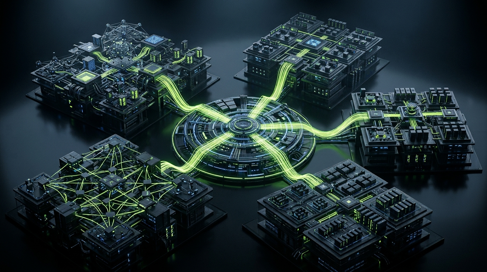
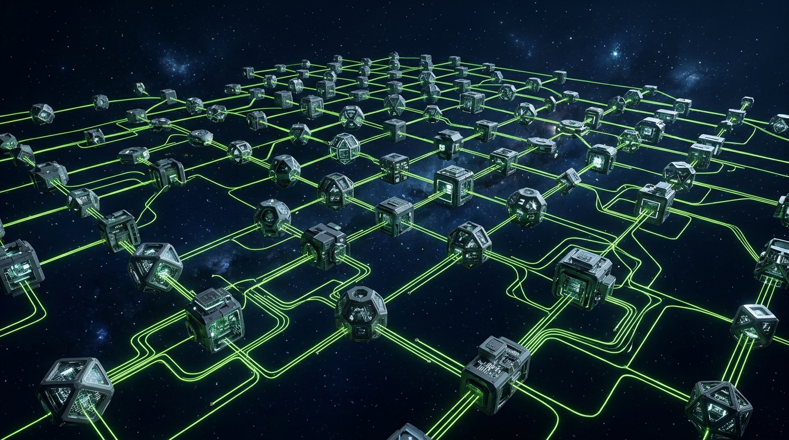
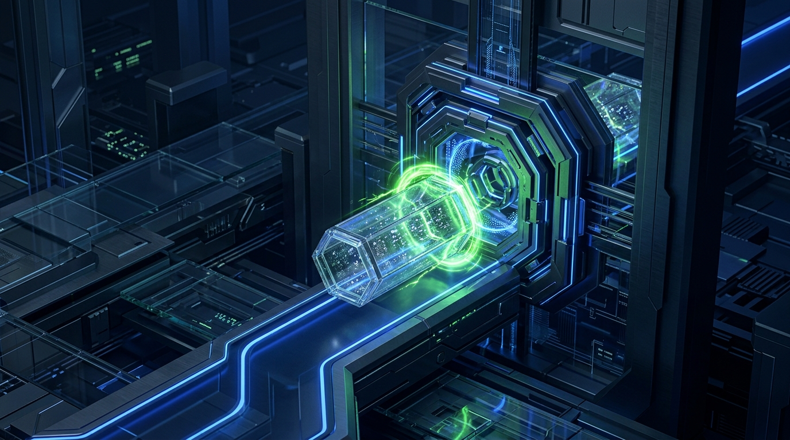

LOOP 01 // SCHEDULING
Deterministic Task DAG Scheduling
Every action is partitioned into atomic steps with checkpoint rollback locks.


Canonical goal payload normalization, SHA-256 hashing, and immutable decision log tracking cross-session agent operations.
Autonomous code execution dispatcher running multi-agent tasks over Model Context Protocol connectors with zero-drift safety.
Single-use approval tokens, HMAC signature verification, and automated audit trails returning verified Git commits and MONOMO records.

● Open Source (MIT)Open source MCP operator gateway for autonomous agent communication and tool execution.
● Open Source (MIT)
AI Operator Mode execution framework and command protocol.
Hybrid GPU/CPU inference engine optimized for zero-cloud local hardware.

🔒 Private CoreNEMESIS Security Gateway enforcing HMAC payload signatures and approval tokens.
Every action is partitioned into atomic steps with checkpoint rollback locks.
JARVAS-2 agent threads invoking native tools with live event stream updates.
Verified Git commits and MONOMO telemetry records proving clean completion.
BENNI OS — Built by operators for operators.
Connect with operators building sovereign AI infrastructure, discuss agent swarm architectures, and track open-source releases.